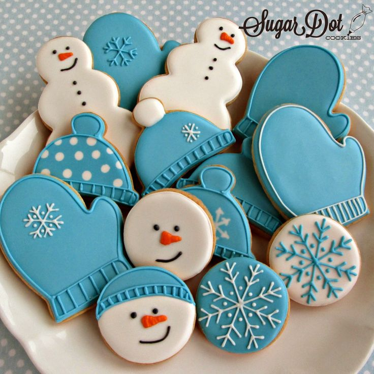

Did you know? Sugar cookies have a lengthy historical background. The origins of cookies date back to the 7th century in Persia, along with the cultivation of sugar. The sugar cookie as we know it today was created by Protestant settlers in the Nazareth colony of Pennsylvania in the 1700’s. They baked their cookies in the shape of a keystone, the state’s symbol. The first sugar cookies weren’t called by this name. When word started spreading throughout Europe in the 17th century about these tasty desserts, and later when they were introduced to the Americas, some entertaining terms were employed to describe these small treats. After all, this child-sized indulgence deserves a few whimsical appellations like jumbles, jumbals, crybabies, plunkets and gemmels. Early cookie recipes that probably morphed into the modern sugar cookie were called gimblettes in France and cimbellines in Italy, too. July 9th is National Sugar Cookie Day